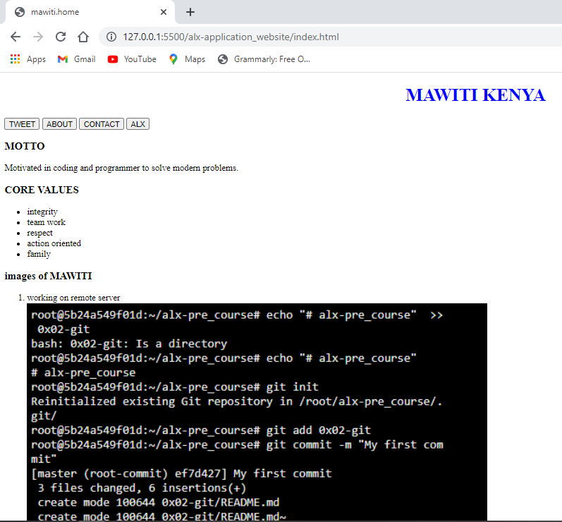

WEBSITE
This are the steps that were given by ALX team to develop my own WEBSITE
Below is the attachment of the same.
The pdf contains
- HTML
- CSS
- JAVASCRIPT
- DISQUES COOMENT
- BE SOCIAL
WOW! Now you are a website developer.
This is a simple website using only html
A photo with my friend Amos Kyalo an Electrical and Electronics Engineer at Murang'a university of Technology and its was taken on Mathioya Dam